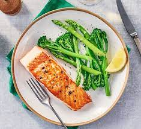

Pan Fried Salmon

Description
A succulent salmon fillet, with crispy skin and ready for you in just 10 minutes. Can serve with a side of buttery, seasonal green veg.
Ingredients
- 2x 150g salmon fillets
- half tsp olive oil
- 20g unsalted butter
- half lemon, juiced
Steps
- Generously season the salmon fillets with salt and pepper. Put the oil and butter in a non-stick frying pan over a medium heat, swirling around the pan until melted and foaming, then turn up the heat. Once the butter starts bubbling, add the salmon fillets to the pan, skin-side-down, and fry for 3 mins until crisp. Flip the fillets over, lower the heat and cook for 2 mins more, then drizzle with the lemon juice. Transfer the salmon to a plate and baste with any of the buttery juices left in the pan
- Transfer the salmon to a plate and baste with any buttery juices left in the pan.
- Ready to serve